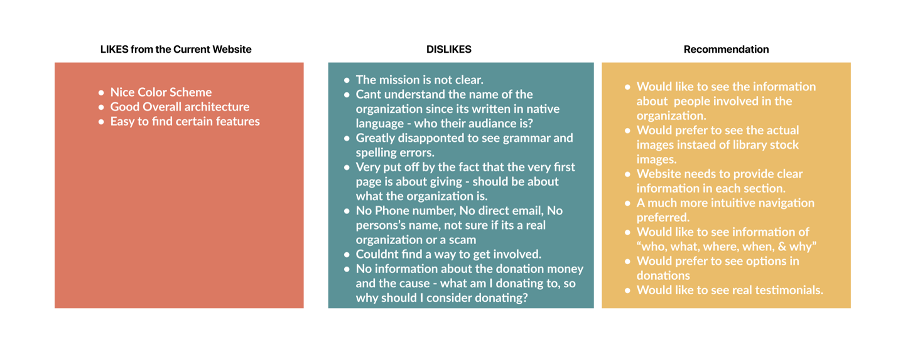
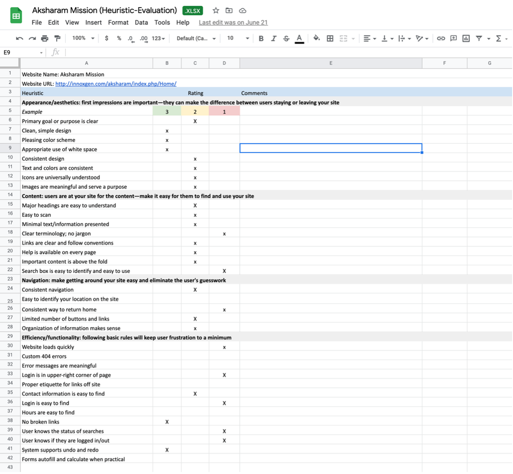
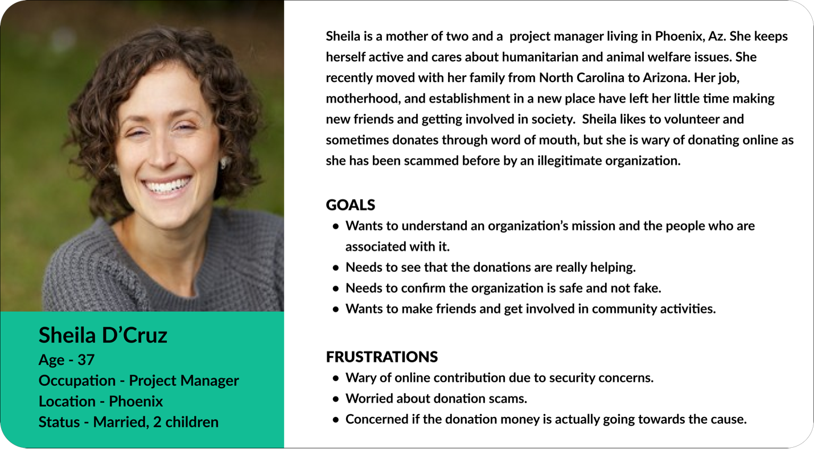

Aksharam Mission Redesign Case Study
.png)
Background
Aksharam Mission is a nonprofit organization based in Arizona, providing and supporting educational opportunities to children living in India while continuously working to preserve the culture and language of Malayalam across the globe through various workshops, classes, and a dedicated Malayalam library located in Scottsdale, AZ. In our client meeting, I met with the Founder and the team to understand the organization and its goals. As a nonprofit organization, Aksharam Mission has many services that target to help and support kids in need, which require donations to function. The current website prototype is simple and effective but must be evaluated to determine opportunities to optimize navigation, information architecture, and UI. Our team will research, analyze, and suggest elements or areas that could benefit from changes or redesigned features to further improve clarity and credibility.
Goal
Our goal is to determine and suggest minor changes and solutions on the Aksharam Mission website to convey their valuable mission and activities better and help motivate individuals to donate, get involved, or spread the word about the Aksharam Mission services and initiatives.
My Personal Goals
- Take full ownership of the various roles involved in redesigning the layout.
- To enhance my learning experience by challenging some design decisions and addressing their solutions.
The Problem
During our stakeholder meeting, when clients expressed the web page's challenges, we immediately dived in to analyze the webpage to understand the state of the online presence that it was in. The clients expressed that their current site needs to be restructured and attract more potential users. After digging deeper and taking the information from the kick-off meeting, we identified that the following were the main four objectives we needed to address that would enhance the mission's personality which are - Helping, Giving, Credible, and Impactful.
- Motivate and attract more donations on Aksharam Mission’s website to support their additional programs and services.
- Establish credibility and spread awareness.
- Be a resource for the community.
- Provide a streamlined experience to the users.
It was inspiring to learn how dedicated the Aksharam Mission Organization is to supporting and educating kids in need. We really wanted to enhance and showcase their valuable mission in our revamped architecture suggestions.
My Role
- Facilitating Stakeholder Meeting
- Preparing User Research Plan
- Conducting User Interviews
- Conducting Usability Testing
- Analyzing and creating design solutions
Timeline: 1 week
Team: Christina Gednalske, Gayathri Arun
Tools Used: InVision, Miro, Zoom, Google Slides
Research & Findings
Understanding the Users
We started the design process with the double diamond research framework in mind. The first step was to have a clear understanding of the current state of the page. We looked at their existing page, took note of the CTA actions, layout, various sections throughout their website, and looked at a couple of other websites for reference. While Aksharam Mission website is optimized for desktops, it needed a necessary update on its mobile version.
It was clear that the first task was to understand how we could attract more donations on the website. We started the process with research. Our team began by gathering qualitative data from approximately 6 user interviews and website testing. Quantitative data regarding general attitudes toward non-profits websites was also gathered through a survey sent out via email and social media over 2 days. By speaking with interviewees and incorporating participant responses through our survey, we were able to understand their pain points and goals related to non-profit efforts and what would motivate them to volunteer, donate, or otherwise become informed or involved in different organizations.
Within our one-on-one interviews, we asked our participants to complete certain targeted tasks on the Aksharam Mission website, which allow us to identify specific pain points related to the site's current navigation, layout, and aesthetics.
All the obtained information was used to establish our user's general goals and frustrations when interacting with non-profit details online and the Aksharam Mission website in particular to inform our suggested website iterations. With the interview, we were trying to understand the following points:
- Identify motivation factors that encouraged donations and involvement in a non-profit organization’s mission.
- Discover what factors affected people’s decision making for selecting organizations to donate to.
- Identify the frustrations/concerns with volunteering opportunities.
- Identify what people liked and disliked about current experiences donating to organizations online.
User Interviews
The key insights we found from our research were regarding motivations for donating, what people liked and disliked about their online donating experience, the type of information users needed before donating, and how they wanted the information to be presented. The following image sums up the key insights gathered from both qualitative and quantitative analysis.

Website Testing
Using the same interviewees, we then proceeded by instructing them to test the usability of the current website. The goal of our usability test was to gather as much information and feedback to understand how our real users interacted with the product and understand their specific pain points related to the current navigation, layout and aesthetic of the website.
With the website testing, we were trying to understand the following points:
- To understand if the Aksharam Mission website can be easily navigated by users and satisfy the user's needs.
- To determine if the Aksharam Mission website has any current pain points that would prevent users from becoming involved in the organization's mission.
The following image sums up the key insights gathered from the website testing.
Definition & Analysis
Heuristic Evaluation
The website fared ok with the heuristic evaluation with having small issues with Consistency, Navigation and Functionality and Aesthetic Design.
Accessibility Tests
Next, Color Accessibility test of the website was performed in which certain font and colors did not pass the AA standards.
Analyzing and Identifying Pain points
While the test participants greatly appreciated the noble cause, it was necessary to identify what might hold donors back from putting their money into the cause. As we finished the qualitative/quantitative analysis and website testing we quickly noted down some of the common pain points that we found, which are:
- The Legitimacy of the organization. For example, participants were not interested in investing if no credible and reliable information was available on the site.
- Transparency - Test participants said they would be happy to donate if the organization can prove the funds go for the specific cause as claimed.
- Information hierarchy - properly organized information for users to skim seemingly and intuitively.
- Emotional Connection - users were motivated to associate with the cause if they could connect emotionally.
- CTA buttons must be visible but not very prominently demanding.
Affinity Mapping
Next, we compiled all the feedback, insights, and pain points listed and grouped similar ones.


Crafting Persona
We then used the insights from the interview, affinity diagram, survey results, and testing feedback to create a user persona. Sheila D'Cruz embodies the goals and pain of our users face when researching and getting involved in nonprofit organizations. Therefore, we referred to Sheila for the entirety of our project to inform decisions and ensure user-centric solutions.
User Insight
Our user, Sheila Dcruz, is wary of donating online unless she has first-hand knowledge of the organization’s work and is certain its mission and causes are legitimate — preferably she would like to see this with her own eyes. She mostly finds out about causes by word of mouth and needs to know she can trust an organization and platform in order to dedicate more resources to a cause. Overall, she lacks incentives to become more actively involved in NPOs.
Problem Statement
Our user is wary of unknown non-profit organizations and, though she sometimes donates to select causes, is overall unlikely to volunteer his time. Currently, she does not feel she can trust organizations and their online platforms and is hesitant to dedicate more resources to causes.
Hypothesis Statement
How might we help users find targeted information by providing an intuitive experience that better showcases Aksharam Mission's noble causes and motivates users to get involved?
Ideation
Story Board
As we started brainstorming more, we mapped a visual storyboard to study how our users can trust and donate confidently using the website. In the storyboard, Sheila has been scammed before, while donating. But with some credible education about looking for accredited organizations, Sheila feels comfortable and confident contributing again.
Feature Prioritization
Later, as we discussed and tested more on improving this website, we first began with I like, I wish, what if? from the data collected. We then voted and rated and came up with the most relevant features. This helped to brainstorm and develop potential ideas that could address users' pain points and give a clearer view of what was important to users while keeping the client's goals and objectives.


Based on the matrix data, several brainstorming sessions, and other analysis results, we proposed solutions that ensured the organization's goal was visibly reflected and centered in the design. Also, which motivated more users to be involved in their events and receive donations/sponsorships to accomplish their goals & mission as a nonprofit organization. With the solutions, our key focus was to improve the credibility and usability of the site.
Some of the highlighted paint points and proposed solutions are mentioned below:
| Pain Points | Solutions |
|---|---|
“Get Involved is no easy to find, but it’s there”
“Trouble finding services/initiatives-identified them because seemed like the only possibility but did not feel like that was correct. (there is no identifier)”
|
Consider adding “Get Involved” and “Initiatives” items/pages to the menu so this information is clearly visible above the fold. |
Donate – “I thought it might give me some options (like do I want to do to children education or building project)”
Donate – “Rather than directly the PayPal, I would expect to see a choice to understand what you donate to - maybe different buckets that I could provide for” |
Consider first navigating users to a Donate page that outlines what they are donating to and even offers the chance to donate to a specific part of the organization.
Adding following details could make this page better and informative:
|
“Doesn’t like how the initiative/ services on home repeat (once in the hero image and then directly in the cards below)”
“Very put off by the fact that the very first page is about giving - should be about what the organization is.” |
Consider removing the “Malayalam Class” etc. items from the scrolling hero image and instead use this space for high-level information about the organization that will inspire them to become involved. Aka the “bragging points" of the organization.
Examples: A 501-c3 non-profit organization dedicated to.....For 15 years, we’ve helped young students..... |
“Would like to see English name and tagline at top of page.”
“Does not trust the text/wording.” |
Consider adding “Aksharam Mission” next to the logo so the name can be read in English.
Consider adding Aksharam Mission and tagline to the hero image (high level information and inspiration for people to get involved) rather than going directly to Giving, Malayalam Class, etc. |
“It always adds credibility if I can see info about the people who are organizing this.”
“Would help to see email of a specific person.”
“In contact us, I would look for a phone number, because I prefer talking directly to the people instead of mailing.”
“I don’t know who they are, don’t know where they are located.” |
Consider adding the organization’s board and their information and names (to whatever degree is comfortable) on the About Us page, or it can be added as a separate page altogether as a drop-down option under the “The About Us” in the header menu.
|
“I was hoping to see testimonials and few real images” |
Try using real content like images, feedback, or paper clippings from the past services as testimonials. |
In the final meeting I successfully presented our user centric design solutions that addressed all the prioritized pain points. The team was happy to see what we have come up with and, at the same time, surprised to see how even a small change could make a big difference on their website. The clients were glad that they took a UX approach to better their product. With that, the project ended on our side, and it was a successful wrap-up!
Reflection and takeaways!
Honestly, at first, I was a bit nervous as this was my first independent work. But, despite my fear and nervousness, I knew this was the perfect opportunity to improve my UX skills.
As I work on this case study and look back on the whole process, it reminds me of the significance of users as they must always be the center of every design decision.
It was clear from the start that the major challenge would be to make the website credible and trustable to motivate users to donate and volunteer. Therefore, I tried to focus on the key features that would increase reliability, transparency, trust, and awareness throughout the process.
My hope is that the provided insightful design solutions successfully increases engagement and motivate more users to become involved with the organization's noble mission and services.
Client Feedback
“The team was very professional, and we were impressed by their process. They took the time to learn about our organization, mission, and goals even before starting the kickoff meeting. Gayathri was exceptionally on top of everything, facilitating workshop, meetings, and ensuring everything was delivered on time as per the specification. Their thoughtful UX strategical solutions helped us improve our product and organize them in a more engaging and intuitive way. We are extremely happy with our web and mobile application! Thank you, Gayathri & team!”
- Founder of Aksharm Mission